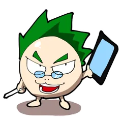

THE MAGIC CRAFT
SFファンタジー少年漫画 × ターン制RPG

魔法の機械『マジッククラフト』の発達により変わりはじめようとする世界。少年と少女は変革の時代を駆け抜ける。
作品ページへ ▸漫画とゲームを高次元で融合させた、新機軸エンターテイメント。
「プレイできる漫画」の世界。
SFファンタジー少年漫画 × ターン制RPG
魔法の機械『マジッククラフト』の発達により変わりはじめようとする世界。少年と少女は変革の時代を駆け抜ける。
作品ページへ ▸
ロールプレイングコミッククリエイター。
ゲームシナリオライター、イラストレーターとしてのお仕事も。